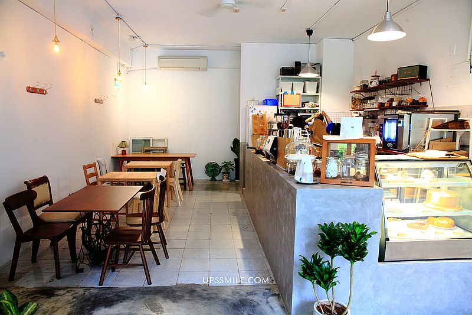
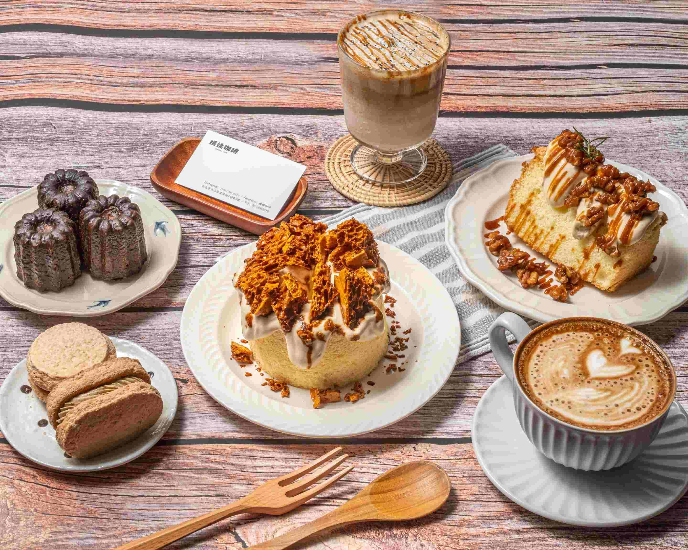
嬌嬌咖啡 (Jiao Jiao Café)
"在都市叢林中，找到一處溫柔的棲息地。"
店家特色
- 採光極佳、安靜舒適，是學生與遠端工作者的首選。
- 提供多個插座座位，低消一杯飲品。
- 寵物友善，氛圍輕柔。
推薦品項
嬌糖脆脆原味戚風、西西里咖啡
地址: 116臺北市文山區景後街149巷3號1樓
營業時間: 12:00 - 18:00 (週一二公休)
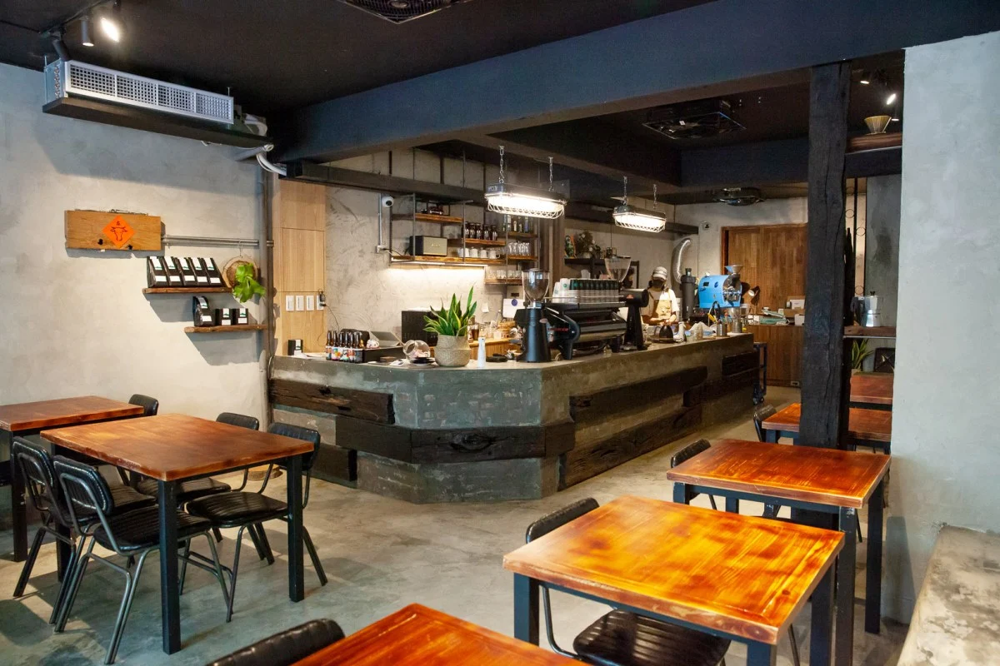
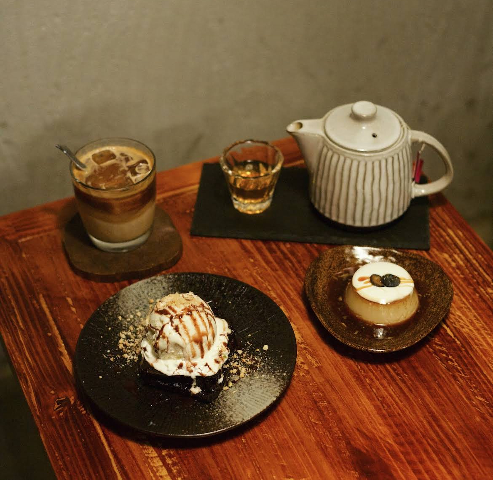
金福咖啡 (Jinfu Coffee)
"在萬隆巷弄中，尋找老宅與工業風的完美結合。"
店家特色
- 老宅改造的工業風空間，氛圍沉穩寧靜。
- 提供自家烘焙咖啡，以及美味的戚風蛋糕。
- 近萬隆捷運站，插座/Wi-Fi供應充足，適合筆電族。
推薦品項
布朗尼冰淇淋、淺焙手沖咖啡
地址: 116台北市文山區萬隆街13巷14號
營業時間: 平日 11:30-19:30 / 週末 13:00-20:30
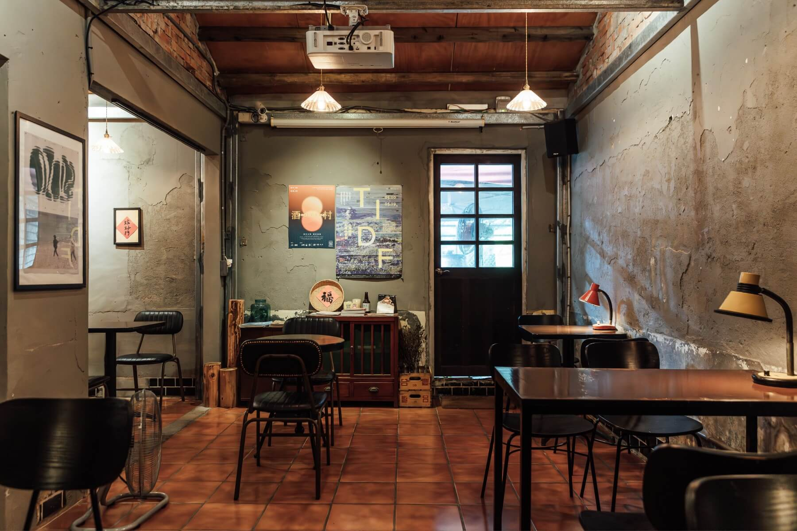
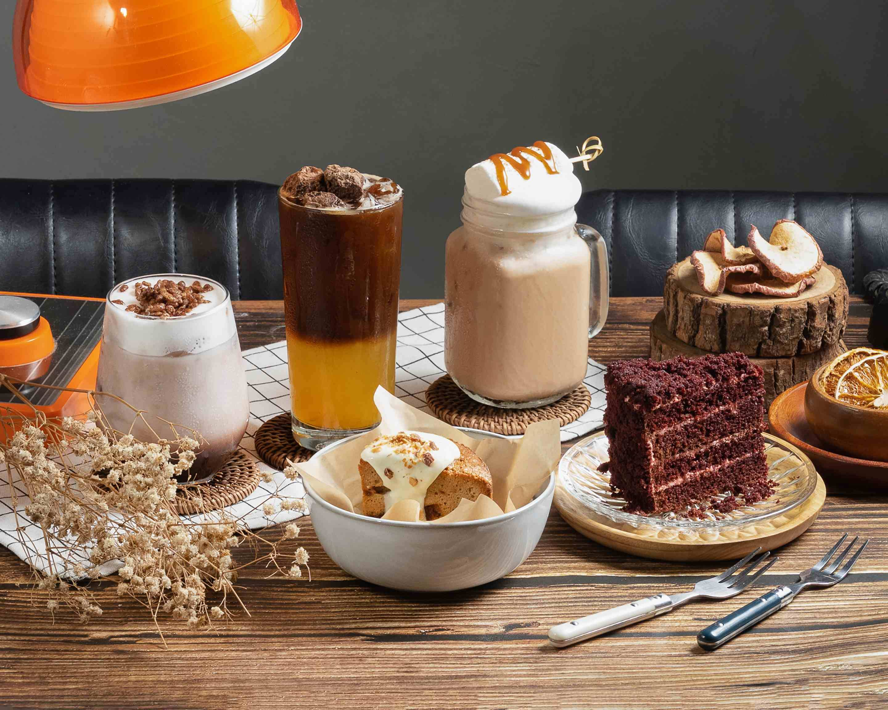
自由·之丘 (Jiyou-Zhiqiu)
"文山區少數營業至深夜，讓靈魂自由的老宅咖啡。"
店家特色
- 隱藏在巷弄中的老宅咖啡，空間靜謐。
- 營業至深夜，非常適合夜貓子讀書或趕稿。
- 座位寬敞舒適，提供穩定的電源與網路。
推薦品項
棉花糖厚奶茶、經典紅絲絨蛋糕
地址: 116台北市文山區木新路二段69巷1號1樓
營業時間: 14:00 – 24:00 （週二公休）
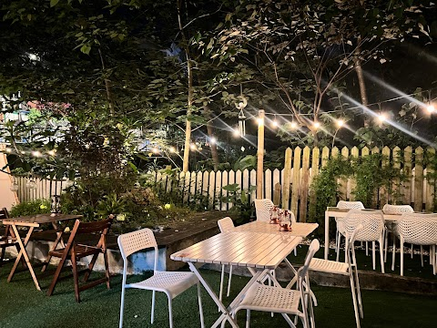
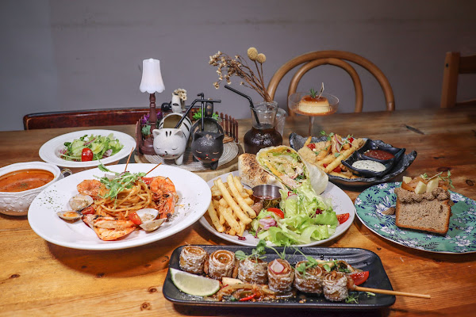
呼嚕小酒館 (Hulu Bistro)
"政大山腳下的純白歐式秘境，白天是咖啡廳，晚上是小酒館。"
店家特色
- 擁有絕美的純白歐式庭院，非常適合拍照打卡。
- 提供輕食、餐點和花式調酒，適合聚餐聊天。
- 空間開放，討論聲量大也較無壓力。
推薦品項
義式咖啡、特色調酒、義大利麵
地址: 116臺北市文山區木柵路三段103巷1號
營業時間: 11:30 - 1:30
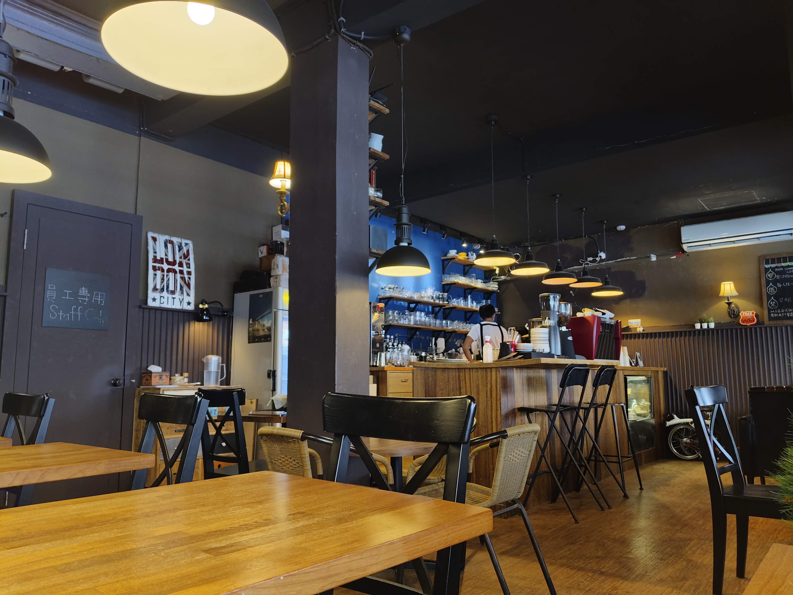
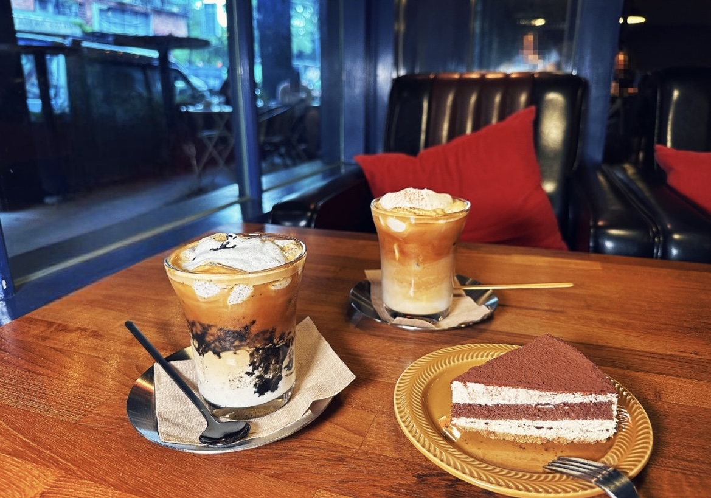
雨。聲。咖。啡 (Rain Sound Coffee)
"在雨聲中，享受一杯拿鐵。"
店家特色
- 帶有復古英倫風格，空間溫暖舒適。
- 提供自家烘焙咖啡，以及特色創意飲品。
- 座位配置適合多人聚會，氣氛輕鬆。
推薦品項
花生奶油拿鐵、提拉米蘇蛋糕
地址: 116台北市文山區景華街28號
營業時間: 09:30–20:00 (週三 12:00–20:00/週二公休)
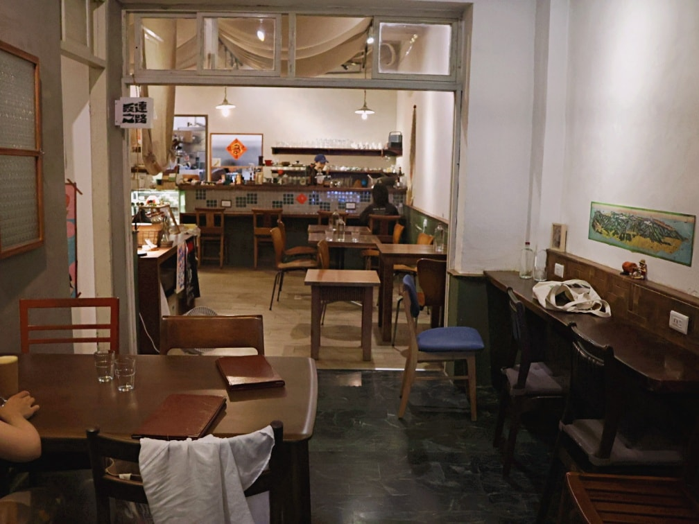
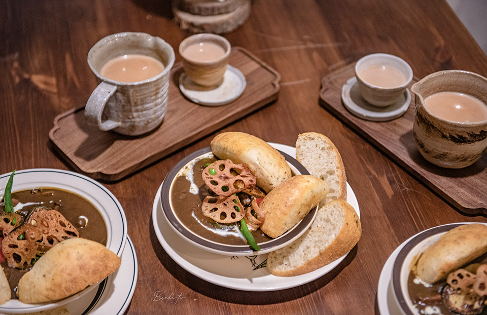
Sunday Morning 星期天早上
"深夜仍營業的溫馨空間，享受異國風情的咖哩和奶茶。"
店家特色
- 裝潢具文青氣息，座位區舒適，適合與好友長時間閒聊。
- 提供蔬食為主的輕食和美味咖哩飯。
- 營業時間長，是萬隆一帶難得的深夜咖啡廳。
推薦品項
香料蔬菜咖哩飯、香料奶茶
地址: 116台北市文山區景福街12巷2號
營業時間: 14:00–23:00（週二週三公休）
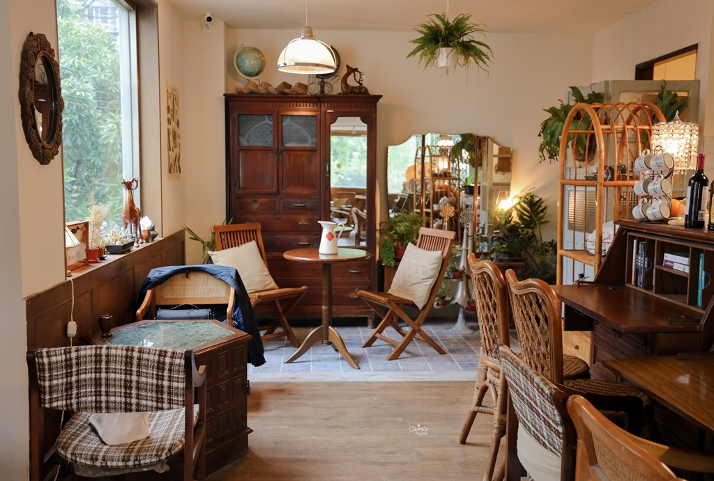

狸奴 (Linu Cafe)
"政大附近的貓咪咖啡廳，甜點與毛茸茸的療癒。"
店家特色
- 有多隻可愛貓咪，非常適合愛貓人士拍照互動。
- 甜點造型精緻，是IG上的熱門打卡點。
- 整體裝潢溫馨可愛，具備療癒氛圍。
推薦品項
檸檬起司蛋糕、鍋煮咖啡
地址: 116臺北市文山區興隆路三段231號
營業時間: 12:00 - 23:30 (週一週二週三公休)
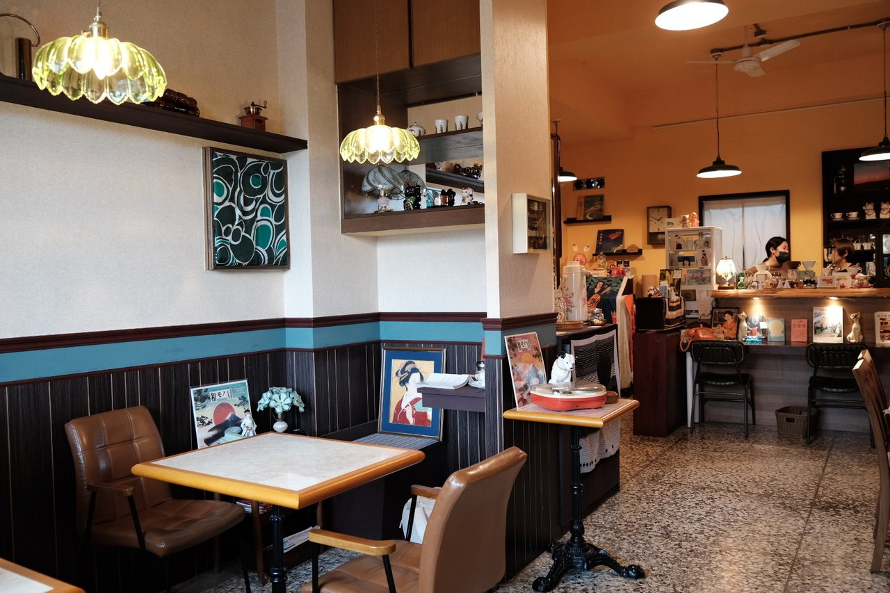
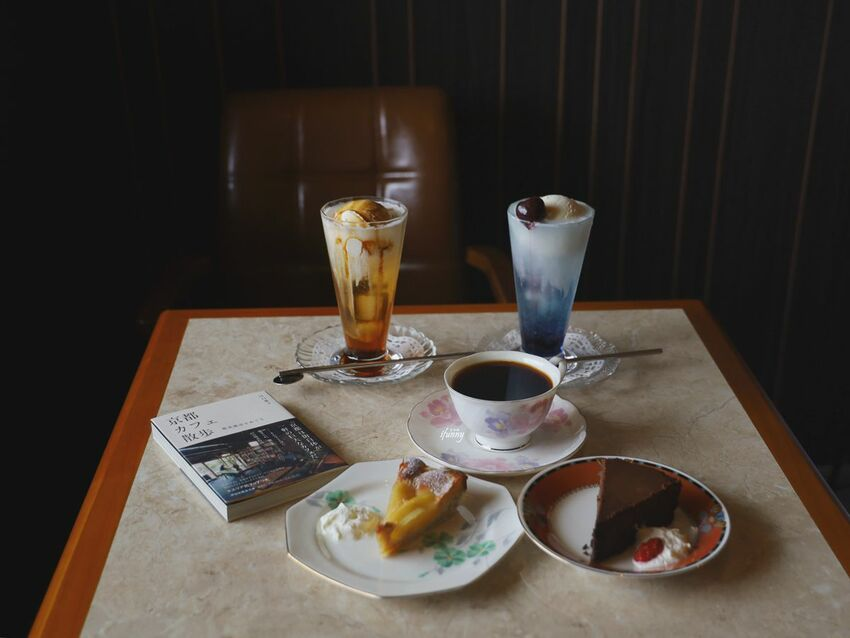
咖啡喫茶 枝音 (Kohi Kissa Edane)
"時光凝結在黑膠唱片裡，充滿故事感的日式喫茶店。"
店家特色
- 濃厚的日式復古裝潢，每個角落都像電影場景，適合拍照。
- 店內播放黑膠唱片，氛圍靜謐且獨特。
- 專注於手沖咖啡和日式輕食。
推薦品項
冰淇淋蘇打、當日限定蛋糕
地址: 116臺北市文山區木新路三段403號1樓
營業時間: 11:30 - 19:00 (週三週五公休)
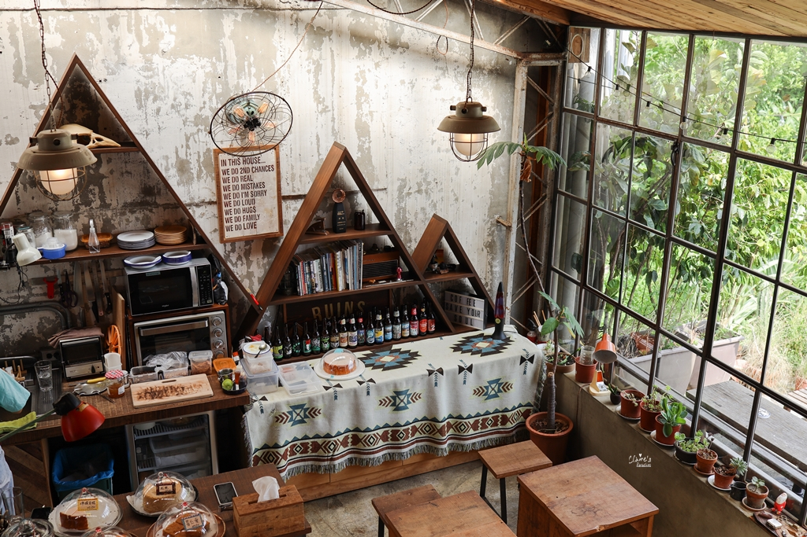
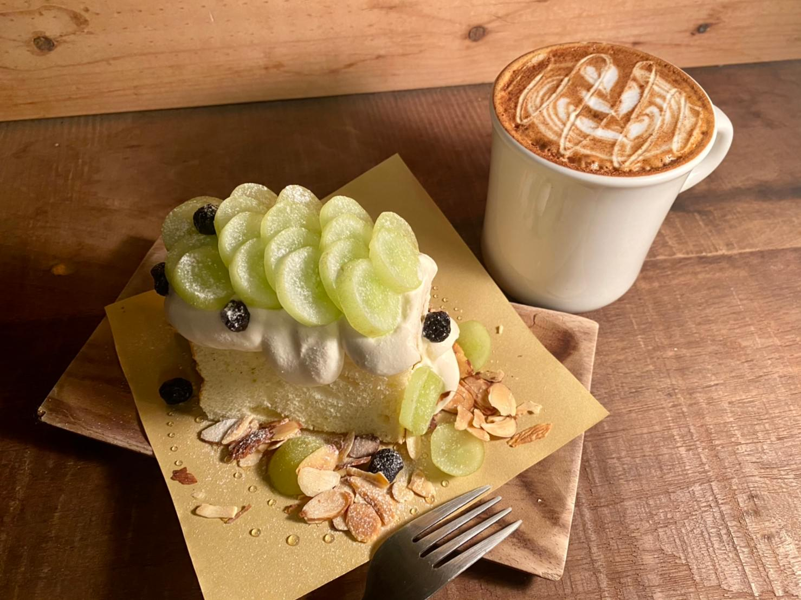
Ruins Coffee Roasters 廢墟
"由舊倉庫改建，充滿歲月痕跡和工業美學的風格名店。"
店家特色
- 著名的廢棄倉庫工業風設計，是台北咖啡界最知名的打卡點之一。
- 空間挑高寬敞，光影交錯，極具視覺張力。
- 自家烘焙咖啡，口味多元且專業。
推薦品項
單品手沖咖啡、綠葡萄戚風蛋糕
地址: 116台北市文山區木柵路三段242號
營業時間: 13:00 - 21:00 (週一公休)
文山咖啡地圖
為了方便您規劃行程，這張地圖整合了我們推薦的所有咖啡廳，並標示了附近的政治大學、世新大學，以及景美、萬隆等主要捷運站。